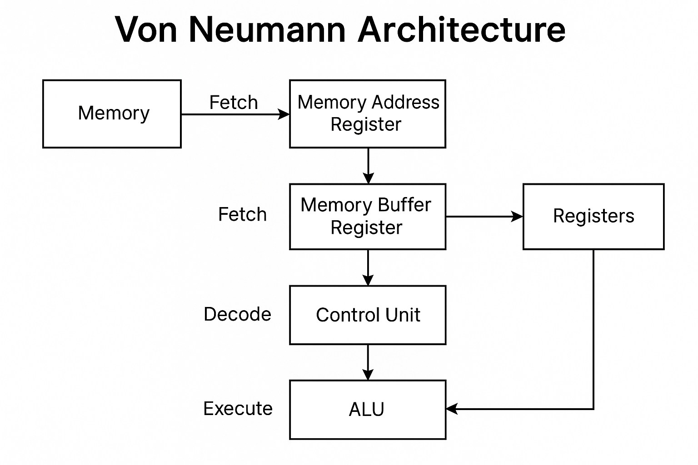

The ALU performs all arithmetic and logical operations necessary for computation.
Control Unit
The Control Unit directs the entire operation of the computer system by fetching, decoding, and executing instructions.
Memory Unit
The Memory Unit stores data and instructions required during the processing of a task.
Von Neumann Architecture Visualizer
This section explains the Von Neumann model, the foundation for modern computing. It demonstrates how data and instructions are handled sequentially using a specific example.
Core Concept & Diagram

Step-by-Step Data Path Example (Uniqueness Requirement)
Step 1: Fetch
The Program Counter (PC) value is moved to the Memory Address Register (MAR). The instruction is read from memory and placed in the Memory Buffer Register (MBR), then copied to the Instruction Register (IR).
Step 2: Decode
The Control Unit (CU) interprets the instruction (ADD R1, R2). It determines that this is an ADD operation and identifies the source registers R1 and R2.
Step 3: Execute
The contents of R1 and R2 are sent to the ALU. The ALU performs the addition, and the result is stored back into the destination register (e.g., R1).
Floating-Point Arithmetic and Bitwise Operations Lab
Custom 10-Bit Floating-Point Representation
Enter a decimal number to see its representation in a custom 10-bit format (1 Sign, 4 Exponent, 5 Mantissa, Bias 7).
Enter a number and click 'Calculate' to see the 10-bit representation.
Interactive Bitwise Operations (8-bit)
Enter two decimal numbers (0-255) to see the results of various bitwise operations. All calculations are performed on 8-bit binary strings.